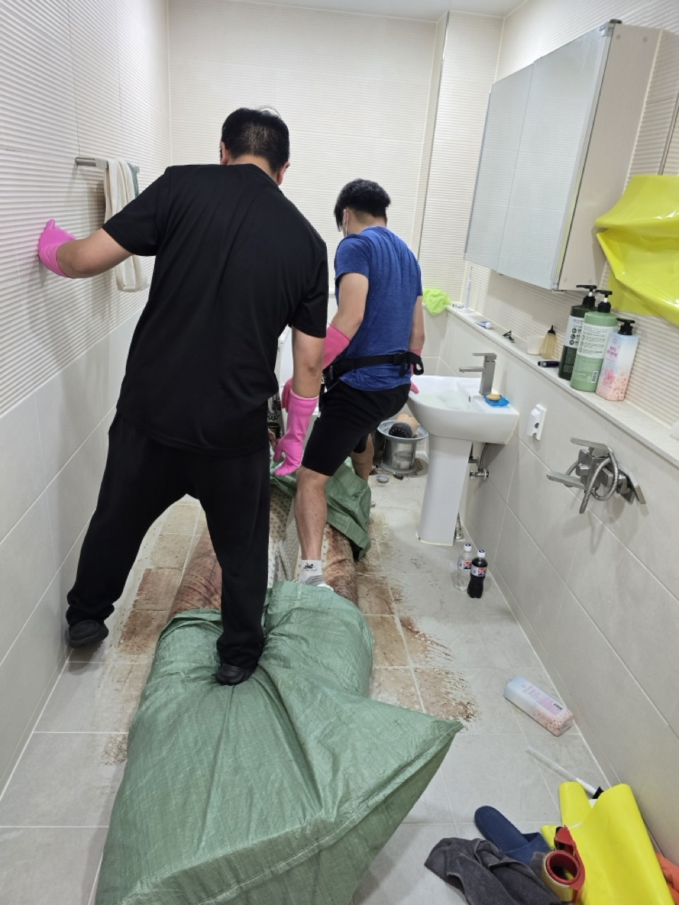
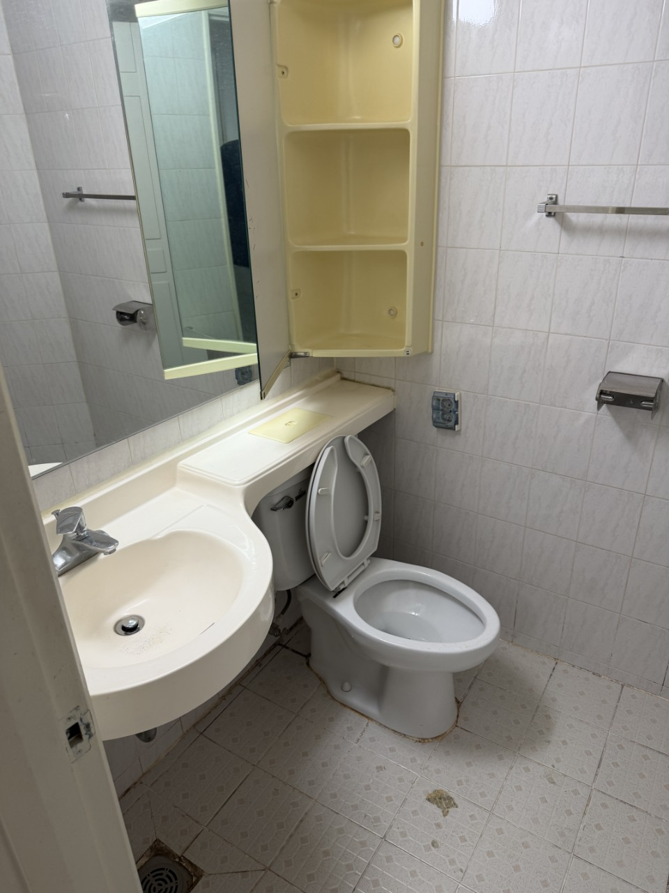

인창동과 교문2동이 역세권에 가깝습니다. 교문1동은 시청·아천동 쪽으로 면적이 더 넓습니다. 주소만 알려주시면 해당 동 기준으로 안내합니다.
구리 중심 · 구리역·시청
인창·교문권 유품정리,
인창·교문권 유품정리,
역세권·아천 현장 상담
인창·교문권은 구리시청과 구리역이 있는 시 중심입니다. 인창동·교문2동은 빌라와 상가가 붙어 있고, 교문1동은 아천동과 아차산 쪽으로 면적이 넓습니다. 골목 주차와 역세권 엘리베이터가 한 상담에 같이 나오는 권역이라, 구리 올바른정리는 건물 유형을 먼저 나눈 뒤 유품정리와 쓰레기집청소 범위를 정합니다.
SERVICE
구리시 인창·교문권에서 맡기는 작업
중심권은 상가 폐업 잔짐과 주거 유품이 같은 블록에서 접수되기도 합니다.
유품정리
역세권 세대 유품 분류
구리역 생활권은 방이 작아도 붙박이·가전이 가득합니다. 가족이 멀리 있으면 사진으로 보관 목록을 확인하고, 나머지 방부터 비웁니다. 교문1동 주택은 다락과 보일러실 짐까지 봅니다.
쓰레기집청소
교문 골목 적치 반출
이면도로에 차를 오래 대기 어려워, 상차 시간을 짧게 잡습니다. 상가 1층과 위층 주거가 겹치면 출입구를 나눠 사용합니다. 악취 세대는 쓰레기집청소와 소독을 순서로 잇습니다.
PRICE
인창·교문권 비용이 달라지는 지점
중심권은 주차 제한과 계단 운반이 시작가 이후 가감 요인입니다.
* 부가세 별도 · 시작가이며 현장 확인 후 확정
유품정리
45만원 부터~
빌라 유품은 45만원부터, 아천 주택은 창고 포함 여부를 더합니다.
고독사 특수청소
80만원 부터~
원룸형 오염은 면적이 작아도 특수청소 80만원부터입니다.
쓰레기집·일반폐기물
30만원 부터~
골목 수동 운반이 길면 일반폐기물 30만원에 인원이 추가됩니다.
GUIDE
인창·교문권 유품정리와 쓰레기집청소, 어디서 갈리나요?
남길 물건이 있으면 유품정리, 적치만 있으면 쓰레기집청소로 시작합니다.
구리 중심권에서 유품정리를 찾는 이유는 무엇인가요?
인창동과 교문2동은 역세권 소형 주거가 많아, 돌아가신 분의 짐을 가족이 보관할 곳이 부족한 경우가 많습니다. 유품정리는 가져갈 소량만 남기고 공간을 비워 임대·매매가 가능하게 합니다. 교문1동 아천동은 한강·아차산 쪽 주택 상속 문의가 있습니다.
구리역 근처 빌라 쓰레기집청소는 왜 시간이 짧아야 하나요?
교문·인창 이면도로는 이중 주차와 상가 출입이 겹칩니다. 차량을 오래 두면 민원이 나와, 실내 포장을 먼저 끝내고 상차는 한 번에 합니다. 이 방식이 중심권 쓰레기집청소의 기본 순서입니다.
시청 인근 아천동은 어떤 현장인가요?
교문1동에 속하는 아천동은 아차산로 일대 주택과 녹지가 섞여 있습니다. 대문 안 마당이 있는 집이 있어 동구동과 비슷하면서도, 서울 광진·중랑 방향 접근이 빠릅니다. 유품과 정원 잔여물이 같이 나오는 상담이 있습니다.
상가 폐업과 위층 유품을 같이 할 수 있나요?
출입구와 전기가 분리되어 있으면 당일 연속이 가능합니다. 1층 집기는 폐업폐기물, 위층은 유품정리 또는 쓰레기집청소로 전표를 나눕니다. 구리 전통시장 방향은 수택권 페이지를 참고하시면 더 맞습니다.
중심권 비용 안내의 핵심은?
유품정리 45만원, 특수청소 80만원, 일반 반출 30만원이 시작가입니다. 인창·교문은 계단 층수와 주차 가능 시간이 가감됩니다. 사진에 현관과 골목을 함께 찍어 주시면 범위가 빨리 나옵니다.
PROCESS
인창·교문권 작업 순서
중심권은 상차 타임슬롯을 상담 때 먼저 받습니다.
STEP 01
출입·주차 확인골목 대기 가능 시간과 엘리베이터 유무를 기록합니다.
STEP 02
보관 물건 확정가져갈 유품 목록을 문자로 남기고 나머지 방만 작업합니다.
STEP 03
짧은 상차포장이 끝난 뒤 차량을 붙여 한 번에 실어 민원을 줄입니다.



FAQ
인창·교문권에서 자주 묻는 질문
검색·AI 답변에 쓰일 수 있도록 이 지역 기준으로 짧게 정리했습니다.
시작가는 같습니다. 차이난다면 계단 운반, 골목 거리, 창고 유무 때문입니다.
아천동은 교문1동 관할입니다. 한강·아차산 방향 주택은 이 권역으로 접수하시면 됩니다.
가능하지만 상차 시간을 피크 밖으로 옮기는 것을 권합니다. 실내 분류는 오전에 해 두고 상차만 조정합니다.